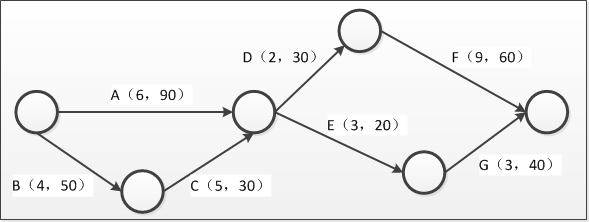

考试时间13:30——15:00 共90分钟。
- 本试卷共三道题，全部为必答题，每题25 分，满分75 分。
- 在答题纸的指定位置填写你所在的省、自治区、直辖市、计划单列市的名称。
- 在答题纸的指定位置填写准考证号、出生年月日和姓名。
- 答题纸上除填写上述内容外只能写解答。
- 解答时字迹务必清楚，字迹不清时，将不评分。
阅读下列说明，回答问题1 至问题3，将解答填入答题纸的对应栏内。
【说明】
某系统集成企业承接了一个环保监测系统项目，为某市的环保局建设水污染自动监测系统。该企业以往的主要业务领域为视频监控及信号分析处理，对自动控制系统也有较强的技术能力，但从未在环保领域开发应用。该企业的老李被任命为此项目的项目经理。
该企业已按照ISO9001 的要求建立了一套质量管理体系，对于项目管理、软件开发等的流程均有明确的书面规定。但公司中很多人认为这套管理体系的要求对于项目来说是多余的，条条框框的约束太多，大部分项目经理都是在项目结项前才把质量体系要求的文档补齐以便能通过结项审批。公司的质量管理员也习以为常，只要在项目结束前能把文档补齐，就不会干涉项目建设。
老李组织了技术骨干对客户的需求进行了调研，通过对用户需求的分析和整理，项目组直接制定了一个总体的技术方案，然后老李制定了一个较粗略的项目计划：1.对市场上的采集设备进行调研，选择一款进行采购；2.利用公司已有的控制软件平台直接进行修改开发；3.待设备选定后，将软件与采集设备进行联调实验，实现软件与设备的控制功能；4.联调成功后，按技术方案开展整个项目的实施工作。
在软件与采集设备的联调过程中，老李请环保局的客户代表来检查工作。客户代表发现由于项目组不了解环保领域的一些参数指标，完成的系统达不到客户方的要求。由于项目从一开始就没有完整的项目文档，老张为了避免再出现重大问题，只好重新进行需求调研。客户方很不满意，既担心项目不能按时上线又担心项目质量无法保证。
【问题1】（6 分）
请指出该项目的需求活动存在哪些问题。
【问题2】（7 分）
请简要分析该项目的项目管理方面存在哪些问题。
【问题3】（12 分）
该企业的质量管理体系可能存在哪些问题？应该如何改进？
参考答案附后。
阅读下列说明，回答问题1 至问题4，将解答填入答题纸的对应栏内。
【说明】
一个信息系统集成项目有A、B、C、D、E、F、G 共7 个活动。各个活动的顺序关系、计划进度和成本预算如下图所示，大写字母为活动名称，其后面括号中的第一个数字是该活动计划进度持续的周数，第二个数字是该活动的成本预算，单位是万元。该项目资金分三次投入，分别在第1 周初、第10 周初和第15 周初投入资金。

项目进行的前9 周，由于第3 周时因公司有个临时活动停工1 周。为赶进度。从其他项目组中临时抽调4 名开发人员到本项目组。第9 周末时，活动A、B 和C 的信息如下，其他活动均未进行。
【问题1】（10 分）
在不影响项目总体工期的前提下，制定能使资金成本最优化的资金投入计划，请计算三个资金投入点分别要投入的资金量并写出在此投入计划下项目各个活动的执行顺序。
【问题2】（5 分）
请计算项目进行到第9 周末时的成本偏差（CV）和进度偏差（SV），并分析项目的进展情况。
【问题3】（5 分）
请计算项目进行到第15 周末时的成本偏差（CV）和进度偏差（SV），并分析项目的进展情况。
【问题4】（5 分）
若需在项目第15 周时计算完工尚需成本（ETC）和完工估算成本（EAC），采用哪种方式计算更合适？写出计算公式。
参考答案附后。
阅读下列说明，回答问题1 至问题3，将解答填入答题纸的对应栏内。
【说明】
某系统集成公司承接了一个政府部门的系统集成大项目，任命张工为大项目项目经理。张工按照项目内容，将项目分成子项目1、子项目2 和子项目3，分别任命李工、王工和廖工负责。三个项目在张工的领导及协调下进展顺利。在整个项目进行到80%时，出资人提出子项目1 由于政策原因需要终止，子项目2、子项目3 继续按照原计划进行。因此张工通知李工将子项目1 资料归档并提交给公司管理资产的人员。随后为了保证子项目2、子项目3的顺利进行，张工将子项目1 的项目团队解散，有关员工加入到子项目2、子项目3 中。
子项目2、子项目3 在张工引入新的资源后，进展顺利，因此张工觉得不需要再加强阶段审查，等项目全部完成后再统一进行验收。
在项目结束后，张工组织客户对子项目2、子项目3 分别进行验收，结果客户对子项目2 的成果很不满意。因子项目3 需要的一个关键部件是子项目2 提供的，最后影响了二者的总体验收，项目因此没有按时交工。
【问题1】（10 分）
结合案例，说明在子项目1 终止时张工的做法是否存在不足？如何从管理收尾及合同收尾两个方面进行弥补？
【问题2】（5 分）
结合案例，请说明张工在随后的子项目2、子项目3 的执行和验收工作中分别存在哪些问题。
【问题3】（10 分）
结合案例，简要回答正确制定此大项目验收工作的步骤。
参考答案附后。
问题1:
- 没有按照规范的需求开发与需求管理的流程及内容开展需求工作；
- 对客户（或用户）的需求获取不充分；
- 需求分析工作不充分；
- 缺乏需求定义环节，没有定义出需求规格说明书；
- 缺乏需求验证环节，没有请客户代表一起进行需求评审；
- 没有制定需求管理计划；
- 没有求得干系人对需求的一致理解；
- 没有求得干系人（特别是客户代表）对需求的承诺；
- 没有有效地管理需求变更；
- 没有有效维护对需求的双向跟踪性；
- 没有及时识别项目工作与需求之间的不一致性。
问题2：
- 没有按公司的质量管理体系要求来进行项目的质量管理，团队成员没有质量意识；
- 没有制定规范的质量管理计划和流程，项目经理仅依据经验来替代规范的质量管理。
- 没有安排专职的项目质量管理人员；
- 没有开展有效的质量保证及质量控制工作；
- 没有开展有效的配置管理工作与系统测试工作；
- 项目计划过于简单、粗略，而且计划没有经过评审；
- 团队成员没有充分参与，仅仅是由项目经理一个人来制订项目计划；
- 在实施过程中没有建立有效的阶段评审机制（技术方案等均未经过评审）；
- 对项目的实施工作没有进行及时有效的监控，未能及时发现问题；
- 轻视文档编制工作，项目文档几乎是一片空白；
- 项目部缺乏对环保领域较为熟悉的专业人才，也未进行相关培训；
- 与客户的沟通工作没有做好。
问题3：
该企业的质量管理体系主要存在以下问题：
- 贯标工作与实际工作和原有管理割裂开来，认为贯标归贯标，实际工作中仍沿用原来的管理模式。
- 不能结合企业的实际情况，照搬照抄，其后果导致旧的方法弃之不用，新的方法不知如何用实际运行中缺乏指导性、操作性。
- 在体系建立和实施过程中，个别领导和负有管理职能的人员，对体系理解不透、不准确，而其又要具体指导贯标工作，以致于使体系无法在本单位得到有效的贯彻。
- 把贯标工作看成是额外安排的一件事，被动应付，不推不动，实施不用心，满足于上级下达的贯标任务。
- 个别单位对体系的宣贯力度不够，使一些部门领导和员工对体系的认识存在偏差。
- 在体系的建立和实施过程中的各种工作浅尝辄止，缺乏深入的研究及遇到问题主动的解决。
改进策略：
- 加强领导的组织和协调作用；
- 统一认识，牢固树立贯标的长久思想；
- 加强培训和教育；
- 以质量管理体系为中心，整合各种管理制度间的关系；
- 强化内审和管理评审；
- 重视持续改进；
- 重视质量管理制度化建设,加强考核，强化监督保障机制的作用。
问题1
第一周初投入资金为：90+50+30=170 万元。
执行顺序：第1-4 周执行B 活动，第1-6 周执行A 活动，第5-9 周执行C 活动。
第十周初投入资金为：30+60（3/9）=50 万元。
执行顺序：第10-11 周执行D 活动，第12-14 周执行F 活动。
第十五周初投入资金为：20+40+60（6/9）=100 万元。
执行顺序：第15-20 周执行F 活动，第15-18 周执行E 活动，第18-20 周执行G 活动。
问题2
CV=EV-AC=170-190=-20 万元。
SV=EV-PV=170-170=0。
项目在第9 周末时，实际进度与计划吻合，但成本超支了20 万元。
问题3
CV=EV-AC=（170+30+12）-（190+30+40）= -48 万元。
SV=EV-PV=（170+30+12）- （170+50）=-8 万元。
项目在第15 周初时，实际进度比计划略有滞后，成本超支了48 万元。
问题4
因为发生偏差的原因没找到或者找到了也难以解决，所以宜采用典型偏差的公式来计算：
ETC=（BAC-EV）/CPI
EAC=AC+ETC
问题1
张工做法存在以下不足：
- 没有针对子项目1 开展有效的管理收尾工作。
- 没有针对子项目1 开展有效的合同收尾工作。
在管理收尾方面应采取以下弥补措施：
- 应确认项目或者阶段已满足所有重要项目干系人需求的行动和活动。
- 确认已满足项目阶段(或者整个项目)的完成标准或退出标准的行动和活动。
- 收集项目或者项目阶段记录、收集教训、归档项目信息，以方便组织未来的项目管理。
在合同收尾方面应采取以下弥补措施：
- 应进行产品验证，验证所有工作已正确和令人满意的完成。
- 应进行合同管理收尾，更新反映最终成果的合同记录并存档将来会用到的信息。
问题2
执行中存在的主要问题：
- 没有进行阶段性审查。
- 没有进行及时的监督和控制。
- 在子项目之间非常缺乏沟通与协调。
- 没有进行有效的需求管理。
- 与客户的沟通不良。
验收中存在的主要问题：
- 没有进行有效的系统测试。
- 没有准备好相应的文档。
- 没有按照规范的流程进行验收。
- 与客户的沟通不良。
问题3
正确的步骤：
- 首先要对各个子项目的成果进行分别测试与确认，并得到客户的首肯。
- 将各个子项目的成果联系起来，展开全面的系统测试，并测试通过。
- 整个系统进入试运行。
- 系统的文档验收（项目介绍、项目最终报告、系统说明手册、系统维护手册、软硬件产品说明书、质量保证书等）。
- 取得项目的最终验收报告 。